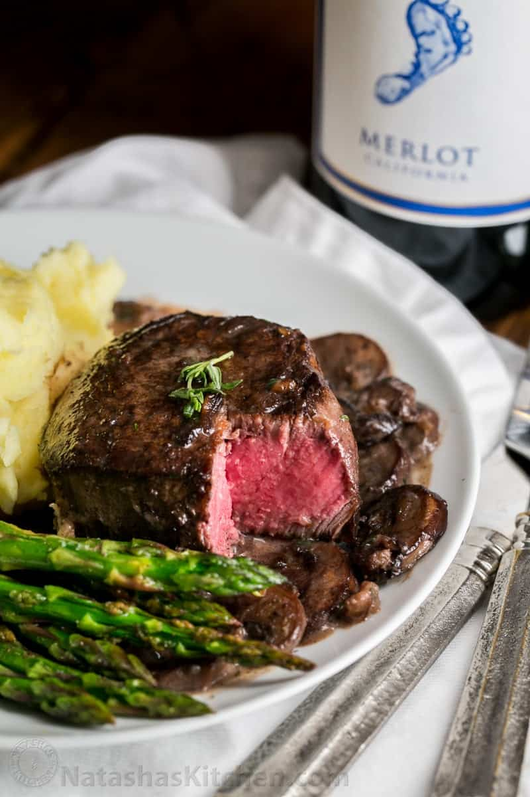

Filet Mignon in Mushroom Wine Sauce

This is a very special filet mignon recipe, but it's made in one pan and fairly simple to prepare. This is
spectacular for any special occasion! I brought this over to my sister's house and it got eaten fast with rave
reviews across the board (despite having to reheat it because by the time I took my pictures, packed it up,
drove to my sister's…) it was still mouthwatering!
I love cooking with wine. Crazy thing is, the bottle of wine that I'm using sells for $7.00 or so at our local
grocery store. Wine is an ingredient that has been around for centuries and I love it for cakes, meats, sauces…
Cooking with wine adds wonderful depth of flavor to recipes.
-
4 Tbsp unsalted butter, divided
-
2 Tbsp olive oil, divided
-
16 oz baby bella mushrooms, thickly sliced
-
1 small or 1/2 medium yellow onion, finely diced
-
4 medium garlic cloves, minced
-
1 Tbsp chopped fresh thyme (or 1 tsp dry thyme if you must)
-
4 (6 oz each) filet mignon steaks (about 1 1/2″ thick)
-
1/2 cup Barefoot Merlot *
-
1 1/2 cups low sodium beef broth
-
1/2 cup heavy whipping cream
-
Salt and Pepper to taste
-
Place a large heavy-bottomed pan over medium/high heat and melt in 2 Tbsp butter and 1 Tbsp oil.
Add thickly sliced mushrooms and cook 5 min until soft. Stir in onion and cook another 3 minutes.
Press in garlic cloves then season with 1/4 tsp salt, 1/4 tsp pepper and 1 Tbsp fresh thyme.
Cook another 2 min, stirring constantly until garlic is fragrant, then transfer mushroom mixture to a
plate. Wipe the skillet clean with a wet paper towel.
-
Pat dry steaks with a paper towel and season all over with salt and pepper (we use a total of 1 tsp salt
and 1/4 tsp pepper).
-
Place the same pan over medium/high heat and add 2 Tbsp butter and 1 Tbsp oil. When butter is hot and
finished foaming, add seasoned steaks to skillet and saute, turning over once with tongs about 3-5 min
per side for medium-rare (I cooked 5-6 min per side for medium doneness). If steak is browning too fast,
reduce heat to medium. Use tongs to transfer steaks to the plate with mushrooms.
-
Add 1/2 cup Merlot and boil until reduced by half (3 min), scraping the bottom with a spatula to deglaze
the pan. Add 1 1/2 cups broth and boil until about 2/3 cup liquid remains (5-6 min). Add 1/2 cup cream
and simmer until sauce thickens slighly (2 min). Return mushrooms and steak to the pan and heat until
warmed through (1 - 2 min). Season sauce to taste with more salt & pepper if desired (I added about 1/4
tsp more salt).